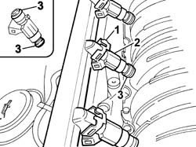
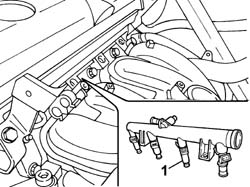

1056B70 INJECTOR (ONE) - R + R WITH FUEL MANIFOLD PIPE REMOVED - INCLUDES SEAL REPLACEMNT
- Path
- Procedures > 10 ENGINE > 1056 PETROL INJECTION SYSTEM > 1056B MULTI-POINT INJECTION SYSTEM (MPI) > 1056B70 INJECTOR (ONE) - R + R WITH FUEL MANIFOLD PIPE REMOVED - INCLUDES SEAL REPLACEMNT
- Kind
- repair procedure (removal / refitting; the operation number is the code)
- Applies to
- engines: 2.0 16v, 3.0 24V V6; all production periods
- Interactive page
- https://sloeber94.github.io/elrnDB-fUlss/en/#/179007028
Applies to: engines: 3.0 24V V6; all production periods
 Removing
Removing
 Refitting
Refitting- Disconnect the negative battery terminal.
Description | Connector | |
|---|---|---|
. | Battery | A001B |
Op. 5010B18 CLIMATE CONTROL UNIT AIR INTAKE - R.R.
Op. 5050B34 WINDSCREEN WIPER ARM/S COMPLETE WITH BLADE - R+R
Op. 7210E22 WINDSCREEN BASE TRIM
See in Op. 1088B10
Op. 1016A42 LEFT HAND CYLINDER HEAD IGNITION COIL COVER - R+R
Op. 1048A59 TUBAZIONE DA DEBIMETRO A MANICOTTO CORPO FARFALLATO - S.R.
See in Op. 1068A54
Op. 1072B50 SLEEVES CONNECTING AIR CAPACITY BOX TO INLET MANIFOLD IS - R+R
Op. 1056B62 L/H AND R/H FUEL PIPE ASSEMBLY - WITH INJECTORS - R + R
1. Release the securing clip.
2. Release the injector from the fuel manifold pipe.
3. Replace the seals on the injector.

Applies to: engines: 3.0 24V V6; all production periods
Refitting
Removing- Fit the injector in the seat on the fuel manifold pipe.
- Fit the securing clip.
Op. 1056B62 L/H AND R/H FUEL PIPE ASSEMBLY - WITH INJECTORS - R + R
Op. 1072B50 SLEEVES CONNECTING AIR CAPACITY BOX TO INLET MANIFOLD IS - R+R
See in Op. 1068A54
Op. 1048A59 TUBAZIONE DA DEBIMETRO A MANICOTTO CORPO FARFALLATO - S.R.
Op. 1016A42 LEFT HAND CYLINDER HEAD IGNITION COIL COVER - R+R
See in Op. 1088B10
Op. 7210E22 WINDSCREEN BASE TRIM
Op. 5050B34 WINDSCREEN WIPER ARM/S COMPLETE WITH BLADE - R+R
Op. 5010B18 CLIMATE CONTROL UNIT AIR INTAKE - R.R.
- Connect the negative battery terminal.
Description | Connector | |
|---|---|---|
. | Battery | A001B |
Applies to: engines: 2.0 16v; all production periods
Removing
Refitting1. Separate the injector from the fuel manifold pipe.

Applies to: engines: 2.0 16v; all production periods
Refitting
Removing- Fit the injector on the fuel manifold pipe.
Topics linked from this page (8)
- 0010T21 ENGINE COOLANT - CHECK DENSITY AND CHANGE, IF NECESSARY
- 1016A42 LEFT HAND CYLINDER HEAD IGNITION COIL COVER - R+R
- 1048A59 TUBAZIONE DA DEBIMETRO A MANICOTTO CORPO FARFALLATO - S.R.
- 1056B62 L/H AND R/H FUEL PIPE ASSEMBLY - WITH INJECTORS - R + R
- 1072B50 SLEEVES CONNECTING AIR CAPACITY BOX TO INLET MANIFOLD IS - R+R
- 5010B18 CLIMATE CONTROL UNIT AIR INTAKE - R.R.
- 5050B34 WINDSCREEN WIPER ARM/S COMPLETE WITH BLADE - R+R
- 7210E22 WINDSCREEN BASE TRIM